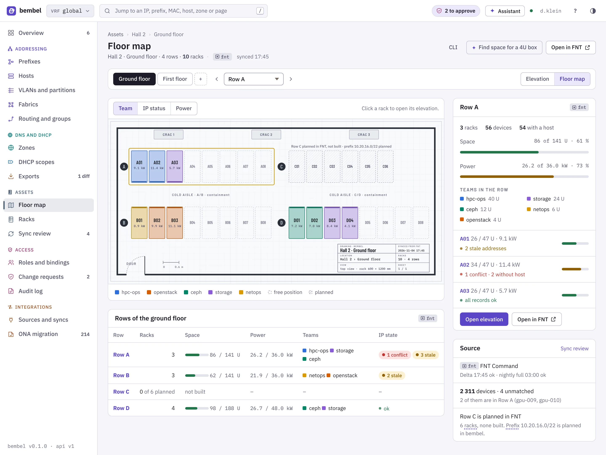
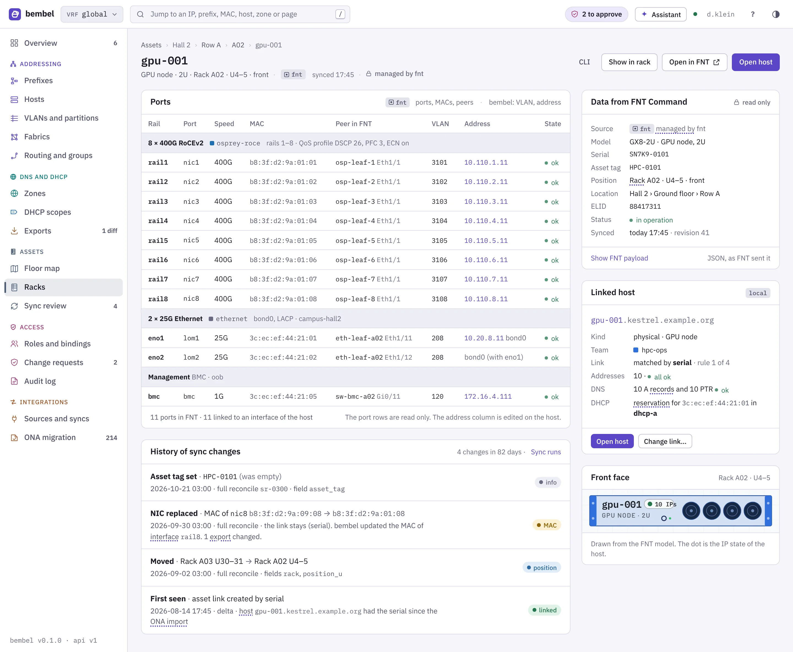
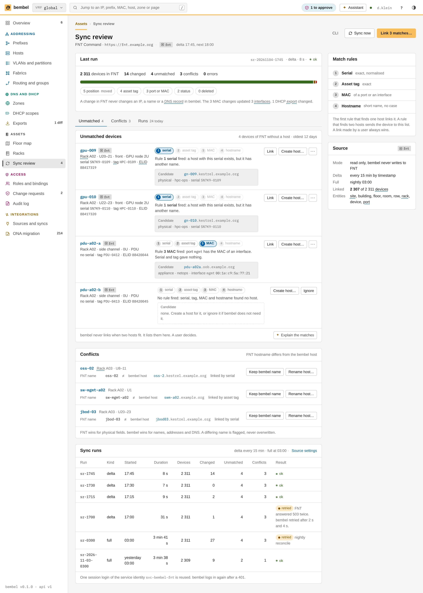
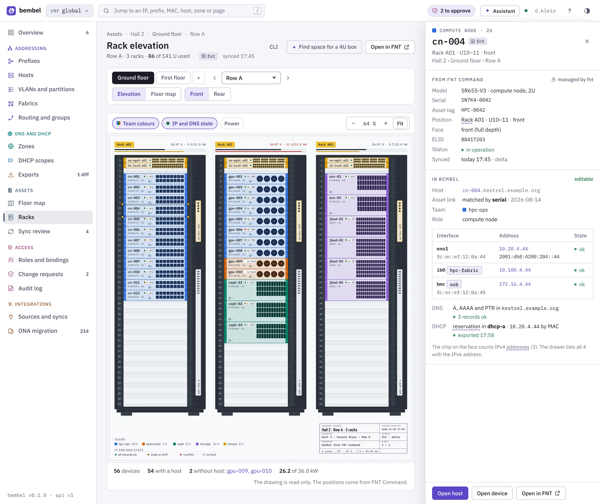

FNT Command is the system of record for the physical world: sites, rooms, racks, devices and ports. bembel mirrors it, read-only, and joins it with the IP data. This chapter specifies the mirror, the sync, the matching of devices to hosts and the views that show both.
The organisation keeps its racks, devices and cables in FNT Command. Hosts, addresses and names live in bembel. Today an admin looks at two tools and joins the data by hand. The mirror joins it.
| In scope | Out of scope |
|---|---|
| Read the location tree (site, building, floor, room, row), racks, devices, ports and optional cables. | Write to FNT Command (rack moves, new devices, port changes). |
| Keep the raw FNT payload next to the mapped fields. | Edit a mirrored object in bembel. The object has managed_by=fnt. |
| Link hosts and interfaces to devices and ports. | Power and weight budgets, cable plans, patch panels as a model. |
| Show the floor map, the rack elevation and the device page with the IP overlay. | Drawing and placing racks (this stays in FNT Command and in rackplanner). |
FNT Command has an integration layer called C gate. Its web services are REST and SOAP. The REST side is the Business Gateway. It exposes the entities of the data model (campus, building, floor and so on) under a base path.
The documentation is in the FNT customer portal. bembel could not read it when this chapter was written. The facts below come from public code that uses the API.
Thin public documentation
The design depends on the API shape, not on unverified details. Each point in the table has a state. Before the sync is built, an FNT admin must give a Swagger or OpenAPI export of the tenant (one per Business Gateway configuration). Names of attributes, the login call and the timestamp field for deltas then become facts.
| Point | What we know | State |
|---|---|---|
| Base path | Starts with /axis. The REST part is /axis/api/rest. The client dennisklein/fntcommand-restclient (Python, maintained by the author) calls /axis/api/rest/businessGateway/…. Public gateway code shows the shorter form /api/rest/entity/<name>/query. | verified that both forms exist in code; which one a tenant uses: to verify |
| Entity query | POST …/entity/<name>/query reads. Relations use …/entity/<name>/<ELID>/…. All other calls need work rights. | verified (route names). Body schema: to verify |
| ELID | A numeric id of an element. The gateway documents "relation operations on a specific ELID". bembel uses it as the stable key. | verified |
| Entity names | campus, building, floor, room, zone, logicalPort, vlan, sVlan, organization, person, easySearch, scrollQuery. | verified (route configuration of a public gateway) |
| Rack, device, card, port, cable | Entity names and attributes are not public. They are probably rack, an item type for devices, port and cable. | not verified |
| Login | Server-side login with user, password, group and client yields a session id. A client reuses the session id. The login path, the header or cookie name and the body are not documented publicly. | concept verified; call to verify |
| Roles | The Command user has roles such as read and full-work. bembel needs only read. | verified |
| Paging | scrollQuery exists for large result sets. | name verified; parameters to verify |
| Change timestamp | A last-modified attribute would allow deltas. If an entity has none, the sync reads all objects and compares hashes. | to verify |
| Webhooks, rate limits | None found. bembel polls and backs off on errors. | assumed |
| OpenAPI | A public project generates an OpenAPI 3 file for a subset of entities with the tool bge2swagger. The same route can generate the bembel client for the real tenant. | verified (subset only) |
The author's client fntcommand-restclient is the base for the bembel client code: the same login, the same session reuse and the same retry on 401. bembel re-implements it in Go (no Python at runtime). It keeps the request and response shapes in test fixtures taken from the tenant.
sources:
fnt:
type: fnt
base_url: https://fnt.example.org
api_path: /axis/api/rest/businessGateway # verify on the tenant
login:
path: /axis/api/rest/login # verify on the tenant
user: bembel-ro
password_file: /run/secrets/fnt-password
group: example-readers
schedule:
full: "0 3 * * *" # nightly reconcile
delta: "*/15 * * * *" # every 15 minutes
page_size: 500
min_ratio: 0.8 # abort a full run that reads < 80 % of the last count
row_from: rack.attribute.row # or: zone
entities: [campus, building, floor, room, zone, rack, device, port]
cables: falseEvery mirrored object has source=fnt, external_ref (the ELID as a string), synced_at and the raw payload (fnt_raw, JSONB). The location kinds form a tree with ltree paths, for example hall2.ground.row-a.a01.
| FNT entity | bembel kind | Mapped fields | State |
|---|---|---|---|
campus | site | name, ELID, address, time zone | entity verified; attributes to verify |
building | building | name, ELID, parent site | same |
floor | floor | name, level, parent building | same |
room | room | name, parent floor, purpose | same |
zone | row (if row_from: zone) | name, parent room | entity verified; use as row to verify |
| rack (cabinet) | rack | name, ELID, parent row or room, height_u, numbering (top-down or bottom-up), position on the floor (x, y, rotation) | not verified |
| device (item) | device | name, ELID, manufacturer, model, serial, asset_tag, status, rack_id, position_u (lowest U), height_u, face (front, rear, both), half-width, depth, custom attributes | not verified |
| card, port | port | name, ELID, mac (if present), speed, parent device, label | not verified. Only ports with a name or a MAC are mirrored. |
vlan, sVlan, logicalPort | read for a comparison report; not mirrored | VID and name | entity verified |
| cable, connection | optional cable (peer port to peer port) | two port ELIDs, medium, length | not verified; off by default |
A device that has no rack (0U, a free-standing appliance) has rack_id = null. The rack view lists it beside the rack. A device with an height_u that overlaps another in the same rack and face gets the flag overlap=true. The view shows a warning and does not hide either device.
{
"id": "0197c1b0-2e44-7d0a-a7c4-91b0d5e2f3a1",
"kind": "device",
"name": "cn-004",
"source": "fnt",
"external_ref": "4120587",
"synced_at": "2026-11-04T02:41:12Z",
"rack_id": "0197c1af-9c10-7b21-8e05-3a4d12c77f90",
"position_u": 10,
"height_u": 2,
"face": "front",
"model": "ExampleServer 2U-4N",
"serial": "SN7K4-0042",
"asset_tag": "A-004213",
"status": "in-production",
"managed_by": "fnt",
"host_link": {"host": "cn-004.kestrel.example.org", "rule": "serial", "confidence": "exact"}
}A sync run reads FNT Command and makes the mirror equal to it. There are two modes. The full run reads all entities every night at 03:00. The delta run reads only objects that changed since the last successful run, every 15 minutes.
| Rule | What bembel does |
|---|---|
| Order | The run reads parents before children. A child with an unknown parent waits until the parent exists. If the parent does not exist at the end of the run, bembel records an error for that object and continues. |
| Paging | The client uses scrollQuery with a page size of 500. It keeps the scroll id only inside one run. |
| Raw payload | Each object keeps the last FNT payload in fnt_raw and its SHA-256 in fnt_hash. A mapping change in bembel re-maps from fnt_raw without a call to FNT. |
| Delta | If the tenant has a last-modified attribute, the delta asks for objects whose value is later than the last successful run start minus 2 minutes. |
| Delta without timestamp | If an entity has no last-modified attribute, the delta reads the entity in full and uses the hash compare. |
| Soft delete | The full run sets missing_since on objects it did not see. A second full run without the object sets deleted_at. |
| After a soft delete | The object leaves the views. The asset link, the history and the audit events stay. If the object returns, deleted_at clears. |
| Guard | A full run that reads less than min_ratio (80 %) of the last object count aborts before it marks anything. This protects the mirror from a partial FNT outage. |
| Lock | One sync run per source at a time. The worker takes the job_lease row sync:fnt (Workers) with a TTL of 2 minutes. It renews the lease every 30 s and in each page transaction. |
| Transaction | One page of 500 objects is one transaction. |
| Lease loss | A run that loses the lease stops. After a crash the lease frees after its TTL. The three replicas never run the same source together (High availability). |
| Backoff | A 429 or 5xx response makes the client wait (1 s, 2 s, 4 s … up to 60 s, 6 tries). Then the run fails and the next schedule tries again. |
CREATE TABLE sync_run (
id uuid PRIMARY KEY DEFAULT uuidv7(),
source text NOT NULL, -- 'fnt'
mode text NOT NULL CHECK (mode IN ('full', 'delta')),
started_at timestamptz NOT NULL,
finished_at timestamptz,
result text CHECK (result IN ('ok', 'partial', 'failed', 'aborted')),
counts jsonb NOT NULL DEFAULT '{}', -- per kind: seen, created, updated, unchanged, missing
errors jsonb NOT NULL DEFAULT '[]'
);$ bembel sync fnt --full sync fnt full run 0197c1b4-71a2-7e10-bd55-0a1f9c2e48d3 campus 1 seen 0 changed building 3 seen 0 changed floor 7 seen 0 changed room 19 seen 1 changed rack 212 seen 2 changed device 2418 seen 14 changed 1 missing port 9760 seen 31 changed links: 3 new, 2 in review duration 4m 12s result ok
The sync metrics and the alert BembelSyncFailing (last success older than 3 hours for a delta source) are in Observability.
A host is a named logical system in bembel. A device is a physical item in FNT Command. The asset link joins them: host to device, and interface to port. bembel finds links with fixed rules, in this order. The first rule that gives exactly one candidate wins.
| # | Rule | Compare | Normalisation |
|---|---|---|---|
| 1 | serial | host attribute serial and device serial | trim, upper case, remove spaces and dashes |
| 2 | asset tag | host attribute asset_tag and device asset_tag | trim, upper case |
| 3 | MAC | interface MAC and port MAC | lower case, colon form |
| 4 | hostname | first label of the host FQDN and the device name | lower case, remove the domain |
| 5 | management IP | address of the interface with role management, and the device management IP attribute | canonical address form |
| Case | Rule |
|---|---|
| A conflict between rules | If rule 1 links a host to device X and rule 3 would link it to device Y, bembel keeps X. It adds a finding "MAC points to another device". The host page shows it. |
| Link by MAC | A match of a port MAC to an interface MAC links the two interfaces. If the devices differ from the host link, it is a finding too. |
| One device, one host | A device links to one host. A blade chassis with four nodes has four devices. A second host that matches the same device goes to review. |
| Virtual machines | A host of kind vm never matches a device. Its runs_on link points to the hypervisor host, which has the asset link. |
| The review list | Each entry has the host, the candidate devices and the rule that produced them. A user with asset:link in the site of the device picks one, rejects all, or opens both objects. |
| A review decision | The decision becomes a manual link (or a manual "no link"). Manual links win over every rule, and the next sync does not change them. |
| The unmatched lists | Two lists: hosts without a device, and devices without a host. Both have a filter by team and by site. |
| Re-run | The matcher runs after each sync run for the objects that changed, and nightly for all. A rule link can change when the data changes. The audit event asset-link.changed records old and new. |
Story data: the host cn-004.kestrel.example.org has the serial SN7K4-0042. FNT has one device with that serial in Rack A01 at U10 to U11. Rule 1 links them. The MAC 3c:ec:ef:12:0a:44 then links the interface eno1 to the port eno1 of the device, and 3c:ec:ef:12:1a:44 links bmc to the BMC port.
Both systems hold some data about the same thing. bembel decides per field who wins. The sync never overwrites the loser. It shows a difference when the two disagree.
| Field | Winner | When they differ |
|---|---|---|
| Location, rack, position, height, face, model, serial, asset tag, status, port names, port MACs | FNT Command | bembel shows FNT's value. A change in bembel is not possible (managed_by=fnt). |
| IP addresses, DNS names, VLANs, DHCP reservations, fabrics | bembel | FNT may hold a management IP attribute. bembel compares it with the interface address and shows a difference. It never writes the value into FNT. |
| Hostname | bembel for the host, FNT for the device | The names are different fields. If the first labels differ, the host page shows a "hostname differs" notice. Nothing is renamed. |
| Owner team | bembel for hosts, FNT attribute for devices | The sync reads a configurable FNT attribute (team_attribute) and shows a notice if it names another team than the host. |
| A device removed in FNT while its host stays | FNT | The link shows device missing. The host stays. A finding appears after the soft delete. |
| A rack moved in FNT | FNT | The mirror updates. The event device.moved goes out. Agents and exports do not depend on it. |
Why one winner per field
A two-way sync needs conflict logic for each field and a rule for loops. The mirror has none of that. FNT is the register of the physical world, and bembel is the register of the logical world. Each owns its fields, and the join is an explicit, visible link.
The UI has four asset pages, specified in UI: assets and fabrics. The mockups are static HTML pages with the story data.

| Page | Route | Content |
|---|---|---|
| Floor map | /assets/floor/{floor} | A top view of the floor with one box per rack. Overlay switch: team, IP state, power. A panel sums up the selected row (space, power, hosts without IP). Click a rack to open the elevation. |
| Rack elevation | /assets/racks/{rack} | The front view of one or more racks in a row (one SVG per row). Device faces with the IP overlay. A side panel for the selected device. |
| Device page | /assets/devices/{device} | FNT data (read-only), the linked host, the ports with their interfaces and addresses, the sync state, the raw payload (admins). |
| Sync and review | /assets/sync | The last runs, the review list, the unmatched lists, the differences. |


The elevation follows the look of the author's tool dennisklein/rackplanner. The drawing is SVG, not DOM. It scales, it prints and it exports. bembel builds one SVG per row. The racks of a row share a floor line, so a row reads like a photo of the aisle.

| Part | Value |
|---|---|
| 1 U | 20 px high |
| Mounting area (19 inch) | 240 px wide, 24 px rail on each side, 36 px side channel on the right |
| Rack width | 344 px including the frame (10 px). Gap between racks: 36 px. |
| Height of a 47 U rack | about 940 px. Racks are bottom-aligned to a shared floor line. |
| U numbers | Mono, 8.5 px, at the left rail. The direction follows the rack field numbering from FNT. rackplanner counts from the top, so the numbering is a rack field and not a constant. to verify |
| Rack tape label | A yellow strip above the rack with the name, for example Rack A01. At its right: used U, for example 12/47 U, and the number of hosts without an address. |
| Space bar | A thin bar under the tape: used (dark), reserved (grey), free. |
The overlay is the main reason for the view. It answers "which address is on this box, and is it healthy" without a click.
| Feature | Behaviour |
|---|---|
| Chips on the face | A 2U device shows up to 4 chips on its face: the primary address first. Each chip has the address (short form) and a dot for the state. |
| Chips on a 1U device | One chip and a "+3" counter. The side panel lists all addresses. |
| Overlay mode Teams | Default colours. A switch above the row selects the mode. |
| Overlay mode Address state | The face is tinted by the worst state of its addresses. |
| Overlay mode Fabric | ethernet, ethernet-roce, infiniband. |
| Overlay mode Sync | Age of synced_at, link rule. |
| Link in both directions | A click on a device opens the side panel with a button Open host. The host page has a button Show in rack that opens the elevation with the device selected. The same holds for the interface and its port. |
| Link without an asset link | Both buttons need the asset link. Without a link, the panel offers Find a host and goes to the review list. |
| Selection | A dashed outline with yellow corner handles marks the selected device. Hover gives a thin dark outline. The handles are for orientation only: the view has no drag and drop, because the mirror is read-only. |
| Keyboard | Arrow keys move the selection, Enter opens the panel, h opens the host, / searches by name, serial or address. |
| Warnings | Overlap of two devices, a device higher than its rack, a host with addresses and no device, a duplicate MAC. Each warning links to a finding. |
| Print and export | The same SVG, on a drawing sheet with a title block (rack plan, date, location, revision, drawn by). A button downloads SVG and PDF. |
Why SVG per row
A row is the unit that an admin walks along. One SVG keeps the floor line, the scale and the legend correct for all racks in the row. It also needs no layout engine in the browser and gives the same picture on screen, on paper and in a ticket.
| Limit | Detail |
|---|---|
| No write back | A rack move or a new device is done in FNT Command. The mirror shows it after the next delta (up to 15 minutes). |
| Unverified API details | Entity names for rack, device, port and cable, the login call, the delta timestamp and the paging parameters need a tenant export. The FNT sync starts with this export (Open questions). |
| No deletes in deltas | A delta cannot see a deleted object. Removals appear after the next full run, and the soft delete needs two runs. A removal can therefore take up to two days to leave the views. |
| One tenant per source | A second FNT tenant is a second source with its own configuration. |
| IP data in FNT | FNT may hold IP or VLAN data. bembel reads VLAN and management-IP attributes only for the comparison report. It does not import them as truth. |
| Size | A site with 104 devices and 105 ports is expected. A full run at a page size of 500 needs about 200 requests for the ports. |
| Run time | The duration depends on the tenant and is not measured. The guard and the metrics make a slow run visible. |
| Cables | Cable mirroring is off by default. The device page then shows no peer ports. |
| Not an inventory of record | If FNT is wrong, the mirror is wrong. The review list and the findings show the mismatch. They do not fix it. |